Seite 1
Titelseite
Für alle Kinder, die manchmal knurren, gähnen, zappeln, staunen, fragen und dann sehr klug so tun, als hätten sie die Antwort schon immer gewusst.
Mit Calli, Mira und Noah.
Diese private Datei ist fuer den Paperback-Innenteil gedacht. Das Cover wird bei KDP separat hochgeladen; deshalb beginnt die Innenpaginierung hier ohne Cover.
Status: 29 Seiten nutzen Aquarellbilder, 41 Seiten sind bewusst als Layout-/Infoseiten gestaltet. Es gibt keine Platzhalter mehr.
Seite 1
Für alle Kinder, die manchmal knurren, gähnen, zappeln, staunen, fragen und dann sehr klug so tun, als hätten sie die Antwort schon immer gewusst.
Mit Calli, Mira und Noah.
Seite 2
Dein Körper redet mit dir.
Nicht mit langen Sätzen. Nicht mit Briefmarke. Und meistens auch nicht mit Trompete, obwohl ein Bauchknurren manchmal genau so klingt.
Dein Körper redet mit Zeichen.
Er knurrt, wenn er Hunger hat. Er macht den Mund trocken, wenn Wasser fehlt. Er lässt deine Beine wippen, wenn Bewegung raus will. Er macht dich müde, wenn die Nacht-Werkstatt bald öffnen möchte.
Dieses Buch hilft dir, diese Zeichen zu bemerken.
Du musst nicht alles perfekt machen. Du musst nicht immer brav sein. Du musst auch keinen Brokkoli umarmen.
Du darfst einfach üben: kurz stehen bleiben, hinhören und dann freundlich entscheiden.
Seite 3
Dieses Buch ist kein Regelbuch und kein Arztbuch.
Es erklärt Kindern in Bildern: Körperzeichen sind keine Strafe. Hunger, Durst, Müdigkeit, Unruhe, Schmerz und Gefühle sind Nachrichten. Manche sind leise. Manche sind laut. Manche kommen im falschen Moment, zum Beispiel genau dann, wenn ein Kind noch eine Runde spielen wollte.
Beim Vorlesen helfen drei Fragen:
Was merkst du gerade?
Was könnte dein Körper brauchen?
Welche kleine freundliche Entscheidung passt jetzt?
Bitte ohne Druck. Kinder lernen leichter, wenn sie sich nicht falsch fühlen.
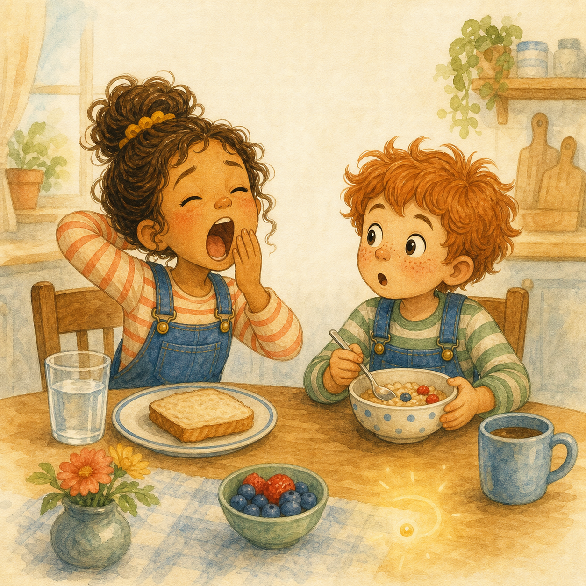
Seite 4
Mira saß am Küchentisch und schaute ihr Brot an.
Das Brot schaute nicht zurück. Brote sind in dieser Sache sehr unhöflich.
Noah saß daneben und machte mit seinem Löffel einen kleinen Turm aus Haferflocken.
„Ich bin gar nicht müde“, sagte Mira.
Dann gähnte sie so groß, dass Noah kurz prüfte, ob sein Löffel noch da war.
„Du hast gerade ein Gähn-Tor aufgemacht“, sagte Noah. „Da hätte ein Bus durchfahren können.“
In diesem Moment machte es leise:
Piep.
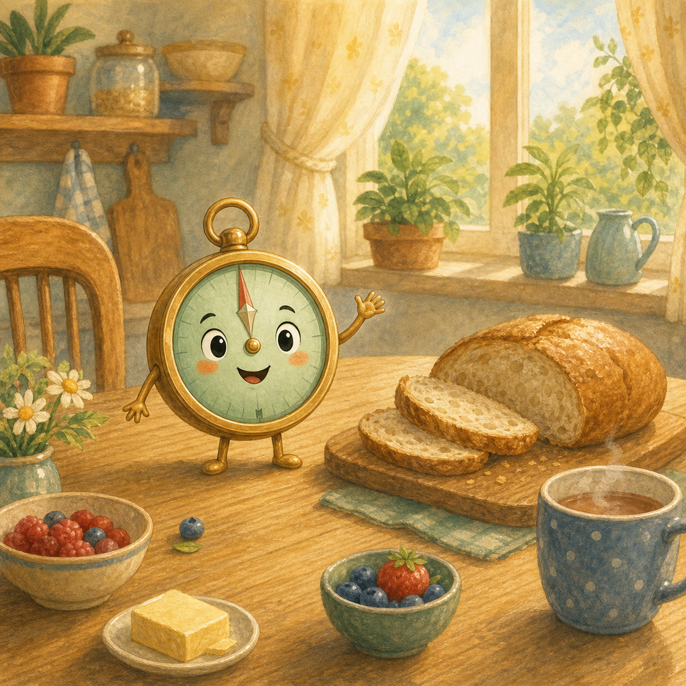
Seite 5
Mira sah unter den Tisch.
Noah sah in seinen Pullover.
Das Brot sagte nichts, wie immer.
Piep.
Ein kleiner Kompass rollte über die Tischkante. Er blieb neben Miras Teller stehen, klappte seine Nadel hoch und verbeugte sich.
„Guten Morgen“, sagte der Kompass. „Ich bin Calli. Und dein Körper hat mir gerade eine Nachricht geschickt.“
„Mein Körper schreibt Nachrichten?“, fragte Mira.
„Ständig“, sagte Calli. „Nur nicht mit Stift. Er knurrt, gähnt, kribbelt, zappelt, zieht, drückt, hüpft und flüstert.“
Noah sah beeindruckt aus. „Mein Bauch kann auch Gewitter.“
„Sehr gut“, sagte Calli. „Dann brauchen wir eine Karte. Nicht für fremde Länder. Für euch. Für innen.“
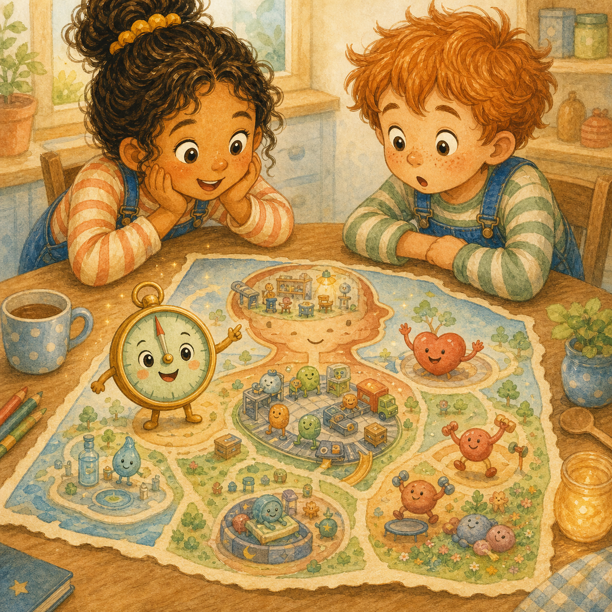
Seite 6
Auf dem Tisch erschien eine Zeichnung.
Ein Kopf wie eine kleine Denkfabrik.
Ein Bauch wie eine Sortierstation.
Muskeln wie Flummis mit Job.
Ein Herz, das aussah, als würde es fleißig winken.
„Willkommen in eurer Gesundheitszentrale“, sagte Calli. „Hier wird den ganzen Tag gearbeitet.“
„Auch wenn ich nichts tue?“, fragte Noah.
„Gerade dann“, sagte Calli. „Dein Körper ist nämlich kein kaputter Roboter. Er ist eher eine Stadt mit vielen Abteilungen.“
Mira zeigte auf den Bauch. „Und was macht die Abteilung?“
Da machte Noahs Bauch:
KNURRR.
Calli drehte sich langsam zu ihm.
„Ich glaube“, sagte er, „die Abteilung möchte sich selbst vorstellen.“
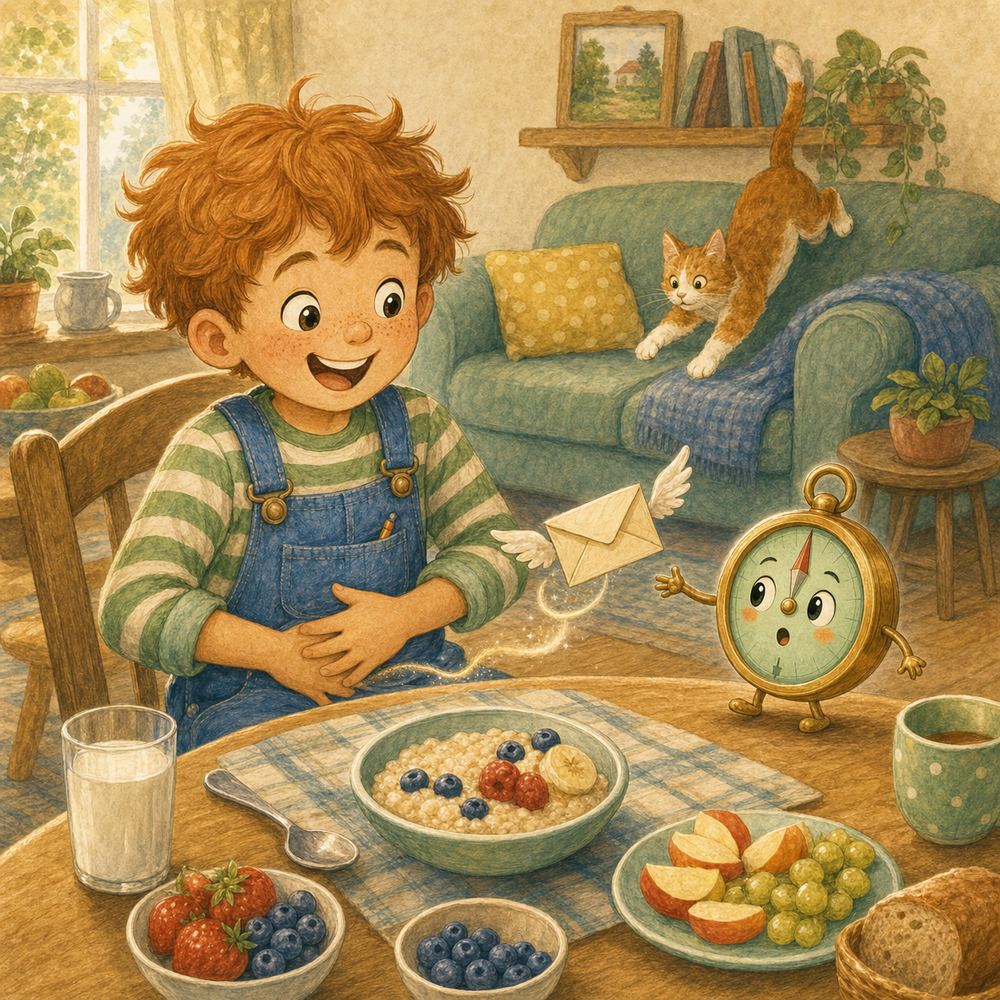
Seite 7
Noahs Bauch knurrte noch einmal.
Diesmal so laut, dass die Katze vom Sofa sprang und so tat, als hätte sie das sowieso vorgehabt.
„Ah!“, rief Calli. „Bauch-Post!“
Ein winziger Briefumschlag flatterte über den Tisch.
Calli räusperte sich und las vor:
„Lieber Noah, der Tank wird leer. Bitte demnächst Frühstück einwerfen. Freundliche Grüße, dein Magen.“
Noah legte die Hand auf den Bauch. „Mein Magen ist höflicher als mein Wecker.“
„Hunger ist keine Strafe“, sagte Calli. „Und auch kein Notfall. Er ist eine Nachricht.“
„Und was antwortet man?“, fragte Mira.
„Mit Ruhe“, sagte Calli. „Und vielleicht mit einem Brot, das immer noch nicht zurückschaut.“
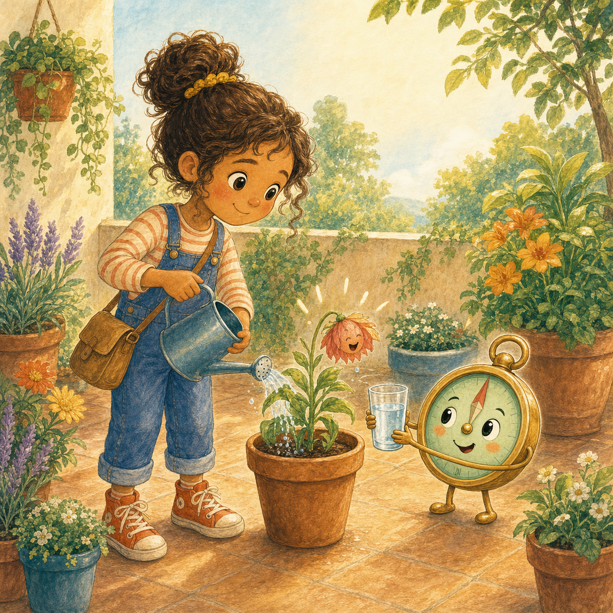
Seite 8
Mira nahm einen Bissen.
Dann schmatzte sie nicht. Das durfte sie nämlich nicht.
Stattdessen machte ihr Mund ein trockenes kleines Schmatz-Gefühl ganz von allein.
„Komisch“, sagte sie. „Mein Mund fühlt sich an wie ein Handtuch, das in der Sonne vergessen wurde.“
Callis Nadel zeigte auf ihr Glas.
„Durst-Post“, sagte er.
„Die ist aber leiser als Bauch-Post“, sagte Noah.
„Viele Körperzeichen sind leise“, sagte Calli. „Darum überhört man sie manchmal.“
Mira trank einen Schluck Wasser.
„Aaaah“, machte sie.
„Offizielle Gießkannen-Geräusche“, sagte Calli zufrieden.
Seite 9
Dein Körper sendet Zeichen. Manche sind laut. Manche sind leise.
Hunger kann heißen: Ich brauche Energie.
Durst kann heißen: Ich brauche Flüssigkeit.
Müdigkeit kann heißen: Ich brauche Pause oder Schlaf.
Unruhe kann heißen: Ich brauche Bewegung, Ruhe oder Hilfe beim Sortieren.
Kein Zeichen ist eine Strafe. Es ist eine Nachricht von dir an dich.
Callis Satz für dieses Kapitel:
Erst hören. Dann entscheiden.
Seite 10
Leg eine Hand auf den Bauch.
Leg eine Hand auf die Brust.
Atme einmal langsam ein.
Atme einmal langsam aus.
Frag dich:
Was sendet mein Körper gerade?
Ich habe Hunger.
Ich habe Durst.
Ich bin müde.
Ich brauche Bewegung.
Ich brauche Nähe.
Ich weiß es noch nicht.
Alles ist erlaubt. Auch „ich weiß es noch nicht“ ist eine kluge Antwort.
Seite 11
Wenn Kinder Körperzeichen nennen, müssen Erwachsene nicht sofort verbessern.
Hilfreich ist oft:
„Was könnte dein Körper gerade brauchen?“
Oder:
„Wollen wir zusammen kurz ausprobieren?“
So entsteht kein Druck. Es entsteht Sprache.
Und Sprache ist manchmal der Anfang von einer guten Gewohnheit.
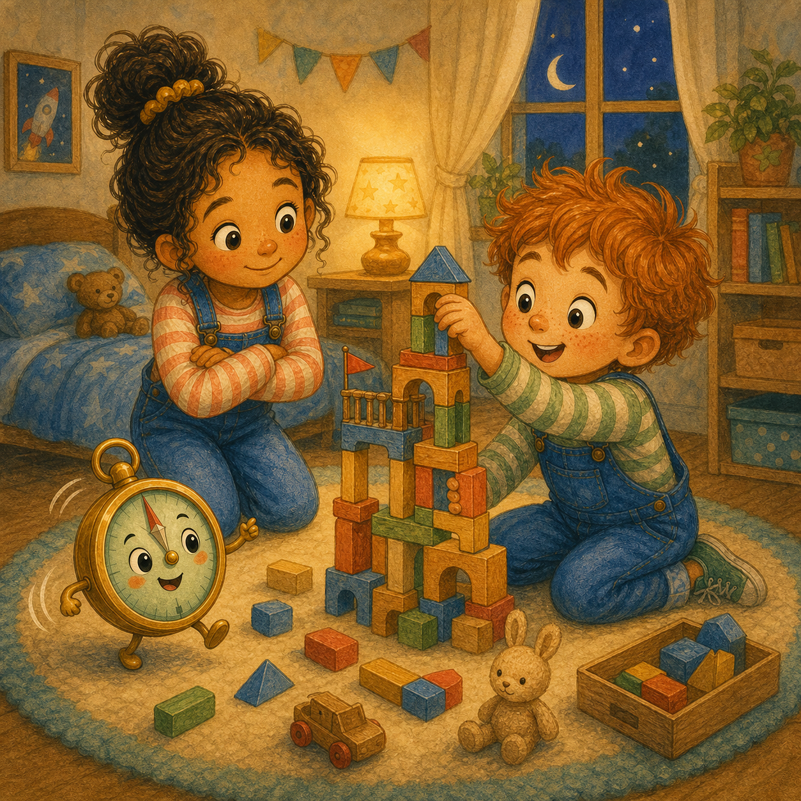
Seite 12
Am Abend hatte Noah ein Problem.
Es war ein sehr großes Problem.
Es hieß: Bettzeit.
„Bettzeit ist unfair“, sagte Noah. „Sie kommt immer dann, wenn ich gerade noch etwas Wichtiges tun muss.“
„Was denn?“, fragte Mira.
Noah zeigte auf seinen Turm aus Bauklötzen.
„Dieser Turm braucht noch einen Balkon, einen geheimen Fahrstuhl und vielleicht einen Hubschrauberlandeplatz.“
Calli rollte über den Teppich.
„Beeindruckend“, sagte er. „Aber dein Körper hat auch einen Bauplan.“
Noah blinzelte. „Mein Körper baut?“
„Nachts“, sagte Calli. „Sehr leise. Mit Schlafmütze.“
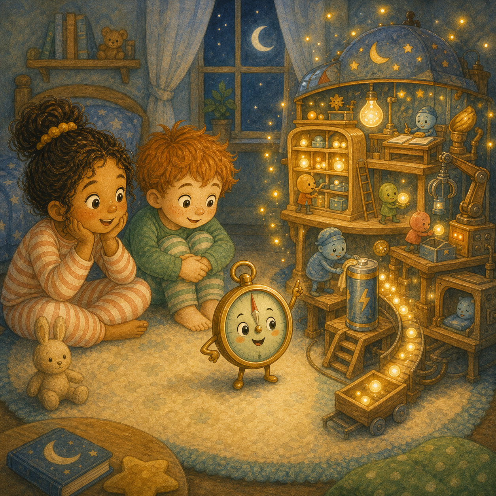
Seite 13
Das Zimmer wurde dunkler.
Nicht gruselig-dunkel.
Gemütlich-dunkel.
In der Ecke funkelte plötzlich eine kleine Nacht-Werkstatt. Dort sortierten Lichtpunkte Erinnerungen in Regale. Ein Lichtpunkt schob einen Wagen mit dem Schild: „Morgen wieder probieren.“ Ein anderer polierte eine kleine Batterie.
„Im Schlaf räumt dein Gehirn auf“, flüsterte Calli.
„Räumt es auch meine Spielsachen auf?“, fragte Noah hoffnungsvoll.
„Leider nein“, sagte Calli. „Dafür bräuchte dein Gehirn Arme.“
Mira kicherte.
„Aber es sortiert, was du erlebt hast. Dein Körper erholt sich. Deine Gefühle bekommen Platz. Und morgen fühlt sich manches nicht mehr ganz so zerknittert an.“
Noah fasste sich an die Stirn. „Ich habe manchmal Knitter im Kopf.“
„Sehr menschlich“, sagte Calli.
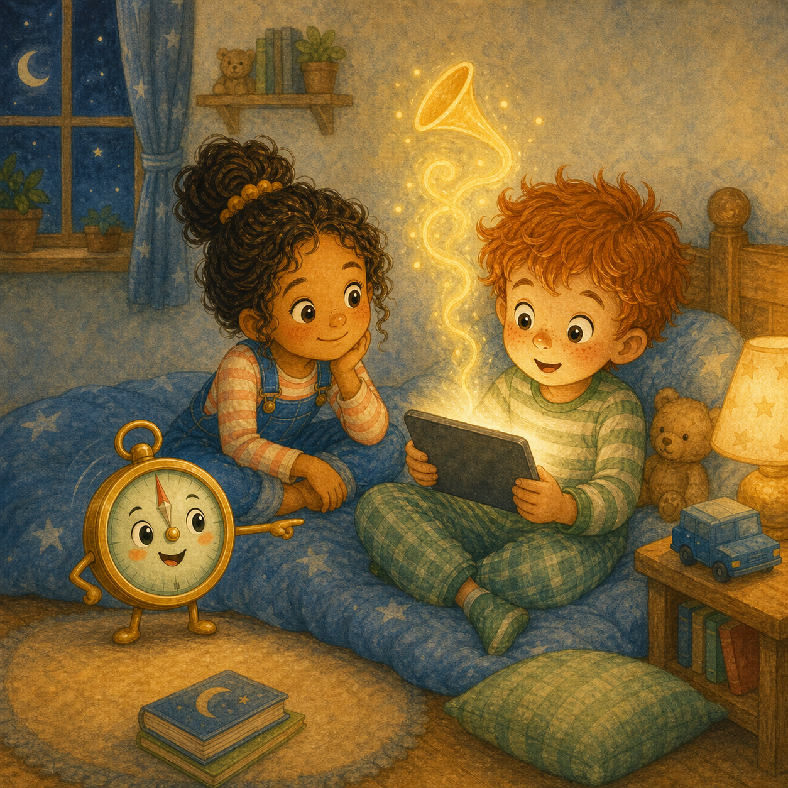
Seite 14
Noah griff nach seinem Tablet.
„Nur ganz kurz“, sagte er. „Ein winziges Kurz. Ein Krümel-Kurz.“
Callis Nadel zeigte auf den Bildschirm.
„Licht sagt deinem Körper: Wach bleiben.“
„Aber es ist nur ein kleines Licht“, sagte Noah.
„Ein kleines Licht kann im Kopf ziemlich laut sein“, sagte Calli. „Vor allem abends.“
Mira stellte sich vor, wie im Kopf jemand mit einer hellen Trompete durch die Nacht-Werkstatt marschierte.
„Tröööt“, sagte sie.
Noah legte das Tablet langsam weg.
„Meine Werkstatt mag keine Trompeten?“
„Nicht kurz vor dem Schlaf“, sagte Calli. „Dann mag sie leise Dinge.“
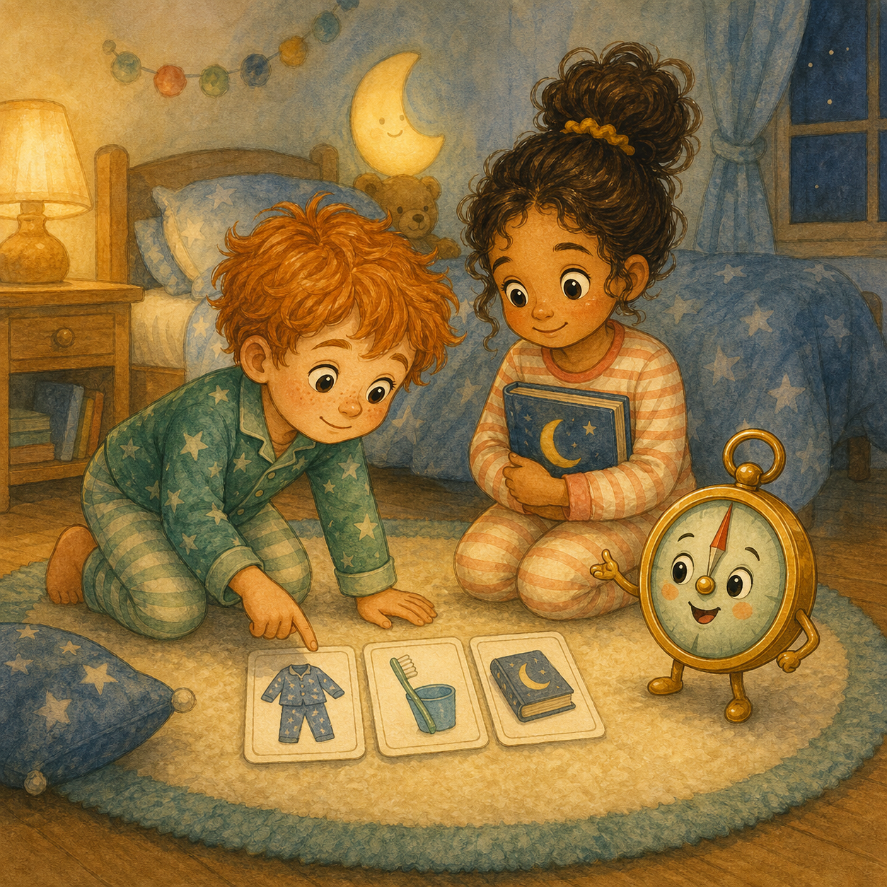
Seite 15
„Wie kommt man denn gut ins Bett?“, fragte Mira.
„Mit einer Startrampe“, sagte Calli.
Noah setzte sich auf. „Für Raketen?“
„Für müde Körper.“
Calli legte drei Karten auf den Teppich.
Karte eins: Zähne putzen.
Karte zwei: Licht dunkler.
Karte drei: Geschichte hören.
„Wenn die Reihenfolge oft ähnlich ist, merkt dein Körper: Ah, jetzt geht es Richtung Schlaf.“
„Und wenn ich nicht müde bin?“, fragte Noah.
„Dann darfst du trotzdem ruhen“, sagte Calli. „Ruhen ist die kleine Schwester vom Schlaf. Sie ist auch nützlich.“
Seite 16
Schlaf hilft vielen Dingen:
dem Kopf beim Sortieren,
der Stimmung beim Beruhigen,
dem Körper beim Wachsen und Erholen,
der Aufmerksamkeit am nächsten Tag.
Bildschirme sind nicht böse. Aber kurz vor dem Schlafen können sie den Kopf wieder wach machen.
Callis Satz für dieses Kapitel:
Schlaf ist kein Pauseknopf. Schlaf ist Nachtarbeit mit Kuscheldecke.
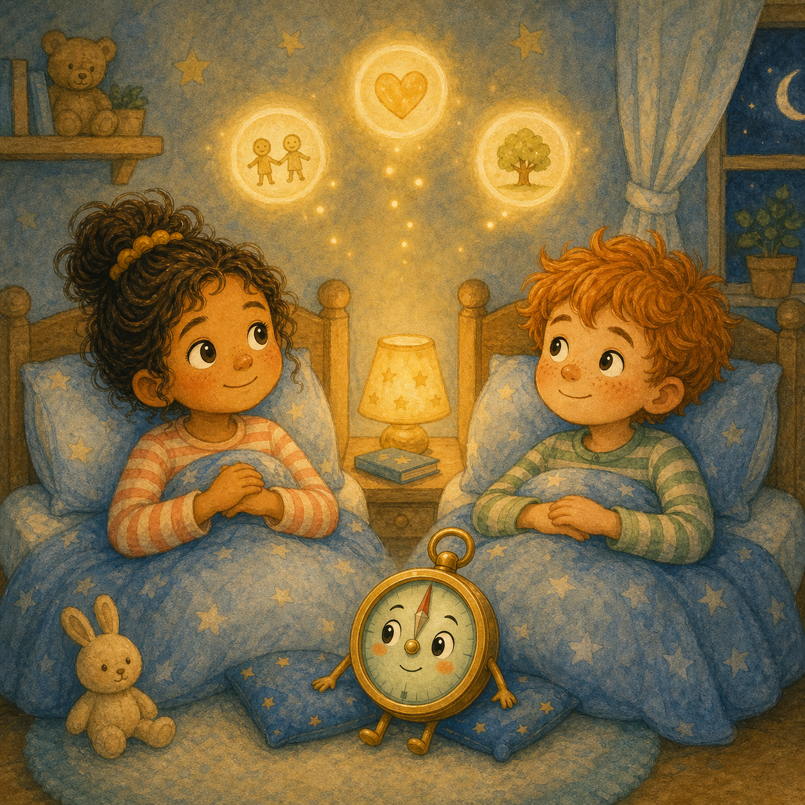
Seite 17
Vor dem Einschlafen nennt jeder drei Dinge vom Tag.
Etwas Schönes.
Etwas Lustiges.
Etwas, das morgen noch einmal probiert werden darf.
Mira sagte: „Der Apfel war knusprig.“
Noah sagte: „Mein Turm hatte fast einen Balkon.“
Calli sagte: „Ich habe heute ein Brot kennengelernt, das sehr ernst war.“
Dann wurde es still.
Nicht sofort Schlaf-still.
Aber fast.
Seite 18
Manchmal kommt Schlaf nicht sofort.
Manchmal ist der Kopf voll.
Manchmal fühlt sich ein Kind allein, obwohl jemand im Haus ist.
Dann darf man sprechen.
„Ich kann nicht schlafen.“
„Ich habe Angst.“
„Mein Kopf ist noch laut.“
Das sind keine falschen Sätze. Das sind Hilfesätze.
Calli flüsterte: „Starke Kinder müssen nicht alles allein schaffen.“
Noah nickte langsam.
„Auch nicht Bettzeit?“
„Auch nicht Bettzeit“, sagte Calli.
Seite 19
Schlaf gelingt nicht besser durch Druck.
Oft helfen wiederkehrende Abläufe, weniger helles Licht, ein ruhiger Ton und die Erlaubnis, über Sorgen zu sprechen.
Wenn Schlafprobleme lange bleiben, sehr belasten oder mit starken Ängsten verbunden sind, sollte fachlicher Rat eingeholt werden.
Für den Alltag gilt:
Ein gutes Ritual ist wie ein Geländer. Es hält, ohne zu schieben.
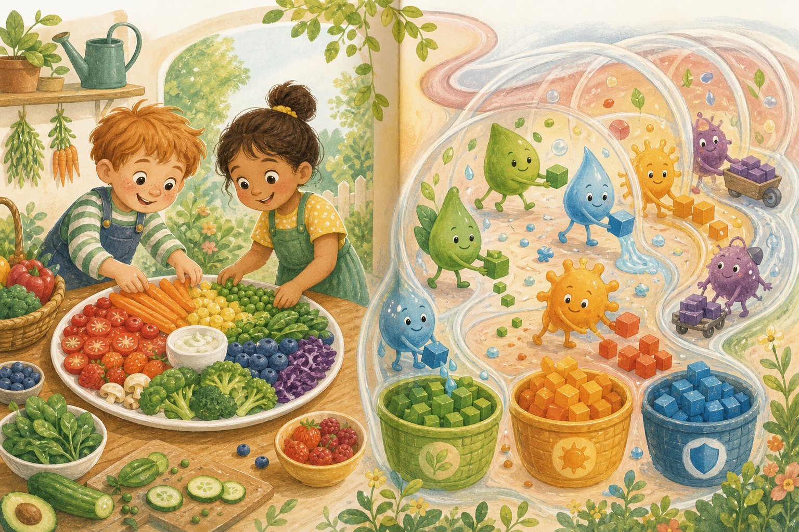
Seite 20
Am nächsten Mittag legte Mira Tomate, Gurke, Brot und Käse auf den Teller.
Noah kniff die Augen zusammen.
„Das sieht aus wie eine Ampel, die Hunger hat.“
„Sehr gut beobachtet“, sagte Calli. „Heute besuchen wir die Bauch-Sortierstation.“
„Gibt es dort Stempel?“, fragte Noah.
„Natürlich“, sagte Calli. „Jede gute Sortierstation hat Stempel.“
Neben dem Teller erschien eine kleine Rutsche. Essensbausteine sausten hinunter.
Manche wurden Energie-Klötzchen.
Manche wurden Wachstumssteine.
Und die Ballaststoffe bekamen kleine Besen.
„Warum haben die Besen?“, fragte Mira.
„Weil sie im Bauch beim Weitertransport mithelfen“, sagte Calli.
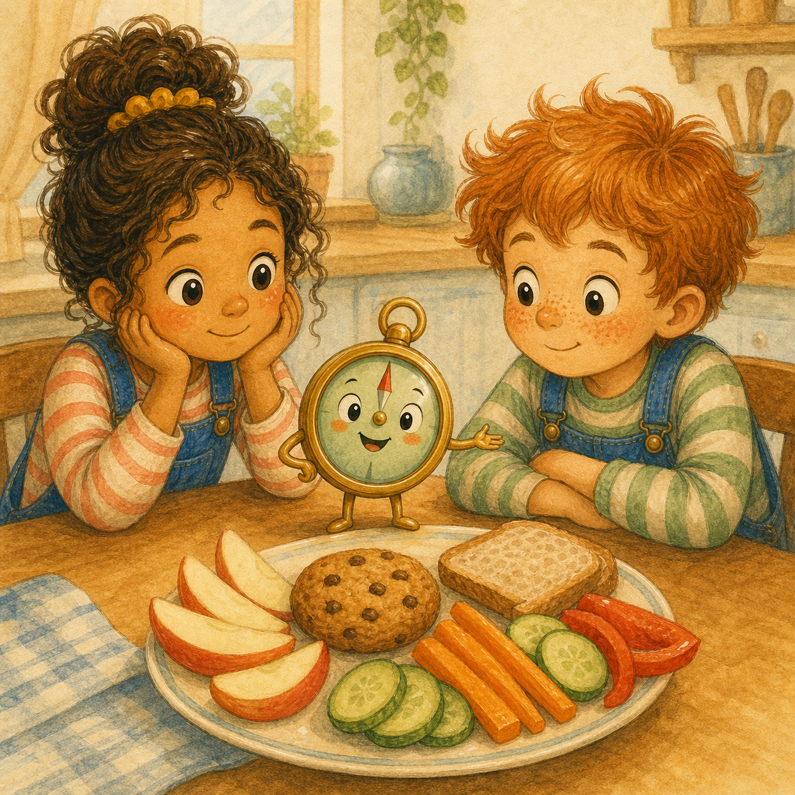
Seite 21
Mira zeigte auf einen Keks.
„Und der?“
Calli wurde nicht streng.
Er machte kein Sirenengeräusch.
Er stellte sich einfach neben den Keks.
„Ein Keks ist kein Bösewicht. Essen ist kein Polizeifall.“
Noah sah erleichtert aus.
„Gut. Der Keks wirkte schon nervös.“
„Dein Körper mag Abwechslung“, sagte Calli. „Wenn der Alltag oft bunt, wasserfreundlich und beweglich ist, darf es auch Dinge geben, die einfach nur gut schmecken.“
Mira dachte nach.
„Also nicht: alles verboten?“
„Nein“, sagte Calli. „Eher: öfter das, was hilft. Und manchmal das, was feiert.“
Seite 22
Noah aß schnell.
Sehr schnell.
Sein Löffel sah aus, als würde er trainieren.
„Stopp“, sagte Calli sanft.
Noah hielt den Löffel in der Luft.
„Ist etwas kaputt?“
„Nein. Aber manchmal braucht der Bauch kurz Zeit, um dem Kopf zu sagen: Danke, ich bin bald satt.“
Mira legte die Gabel hin.
„Mein Bauch schickt langsame Briefe?“
„Manche Briefe brauchen ein paar Minuten“, sagte Calli.
Noah betrachtete seinen Teller.
„Dann warte ich auf die Post.“
„Gute Idee“, sagte Calli. „Satt ist auch eine Nachricht.“
Seite 23
Nach dem Essen lief Noah zum Garten.
„Rennen?“
„Gleich“, sagte Mira. „Ich trinke erst.“
Calli nickte so stark, dass seine Nadel wackelte.
„Wasser hilft im Körper beim Transportieren. Es ist wie ein freundlicher Lieferdienst.“
Noah trank einen Schluck und sagte mit tiefer Stimme:
„Lieferung angekommen.“
Mira hob ihr Glas.
„Für die Denkfabrik.“
„Für die Muskelflummis“, sagte Noah.
„Für die Bauch-Sortierstation“, sagte Calli.
Sie stießen mit Wasser an.
Es klang nicht besonders festlich.
Aber sehr gesundheitszentralig.
Seite 24
Ein bunter Teller kann viele Bausteine liefern.
Obst und Gemüse bringen Vitamine, Mineralstoffe und Ballaststoffe.
Vollkorn macht oft länger satt als sehr helles Brot.
Wasser ist meistens das beste Alltagsgetränk.
Kein einzelnes Essen macht dich allein gesund oder ungesund.
Es kommt auf viele kleine Entscheidungen an.
Callis Satz für dieses Kapitel:
Dein Bauch braucht keine Verbote. Er braucht Aufmerksamkeit.
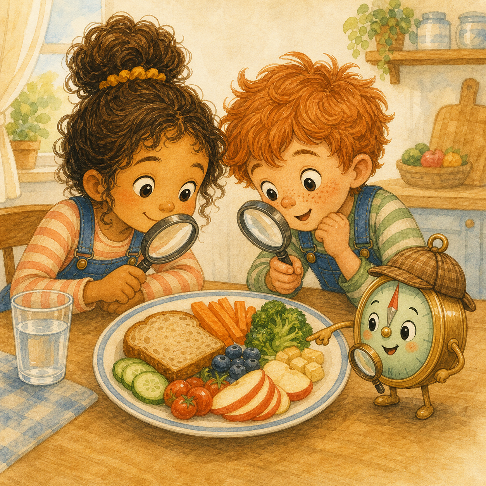
Seite 25
Schau auf deinen Teller.
Findest du etwas:
Knuspriges?
Weiches?
Saftiges?
Buntes?
Etwas, das dich lange satt machen kann?
Etwas, das einfach Freude macht?
Du musst nicht alles auf einmal haben.
Du darfst neugierig werden.
„Ich habe etwas Knuspriges“, sagte Noah.
„Ich auch“, sagte Mira.
Calli schaute zum Brot.
„Es schaut zwar wieder nicht zurück, aber es macht seinen Job.“
Seite 26
Am Nachmittag wollte Noah noch einen Keks.
Dann noch einen.
Dann sah er den dritten an.
„Ich weiß nicht, ob mein Bauch noch Hunger hat oder mein Mund noch Party macht.“
Calli strahlte.
„Das ist eine sehr gute Frage.“
Mira legte eine Hand auf den Bauch.
„Meiner sagt: genug.“
Noah wartete kurz.
Sein Bauch sagte nichts Lautes.
Sein Mund flüsterte: Keks.
„Ich hebe ihn für später auf“, entschied Noah.
Calli klappte die Nadel hoch.
„Das war kein Verbot. Das war Hinhören.“
Seite 27
Essen ist ein sensibles Thema.
Hilfreich sind Sätze wie:
„Was merkt dein Bauch?“
„Bist du noch hungrig, satt oder unsicher?“
„Wollen wir kurz warten und dann entscheiden?“
Weniger hilfreich sind Scham, Drohung oder Kommentare über Körperform.
Kinder brauchen Orientierung. Aber sie brauchen auch Vertrauen in ihre eigenen Signale.
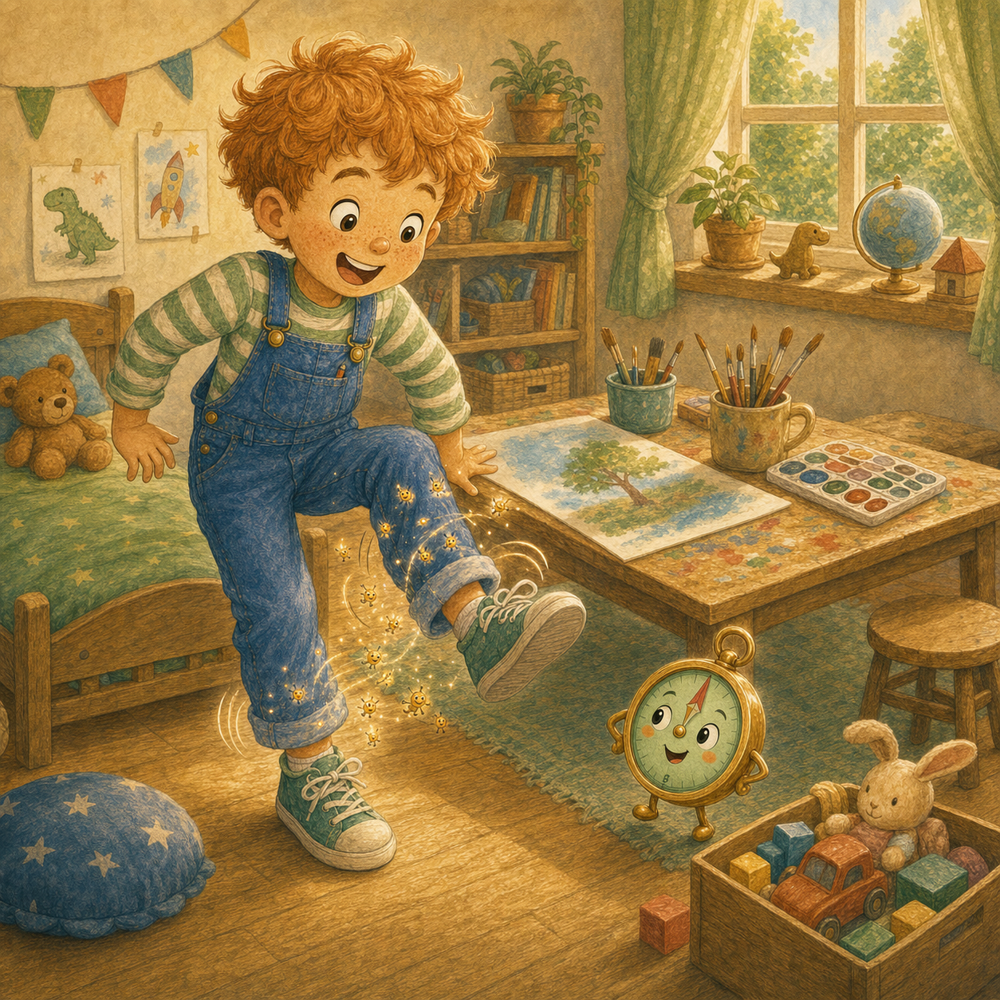
Seite 28
Nach dem Mittagessen sollten alle einen Moment ruhig sitzen.
Mira schaffte es.
Noah schaffte es ungefähr vier Sekunden.
Dann wippten seine Füße.
Erst leise.
Dann schneller.
Dann so sehr, dass der Stuhl aussah, als wolle er verreisen.
„Meine Beine haben eine eigene Meinung“, sagte Noah.
Callis Nadel zeigte auf die Tür.
„Zappelbeine sind oft Bewegungs-Post.“
„Was steht drin?“, fragte Mira.
Calli räusperte sich.
„Liebe Familie, hier ist Energie. Bitte Ausgang öffnen.“
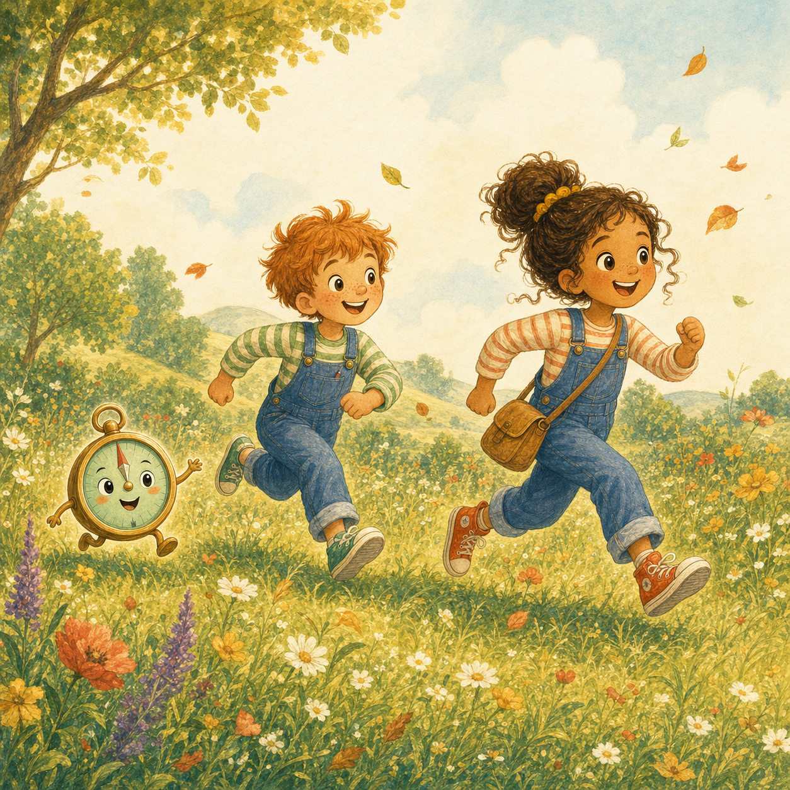
Seite 29
Draußen rannten Mira und Noah über die Wiese.
Noah rannte los wie ein Pfeil, der vergessen hatte, wohin er wollte.
Mira hüpfte über drei Steine.
Calli rollte hinterher und rief: „Wartet auf die kleinen Beine!“
Nach einer Weile legte Noah die Hand auf die Brust.
„Mein Herz klopft.“
„Es arbeitet“, sagte Calli.
„Ist das schlimm?“
„Beim Toben darf das Herz schneller klopfen. Es hilft, Blut und Sauerstoff dorthin zu bringen, wo dein Körper gerade mehr braucht.“
Mira hob die Arme.
„Meine Muskeln sagen Hallo.“
„Muskeln mögen Arbeit“, sagte Calli. „Und Pausen danach auch.“
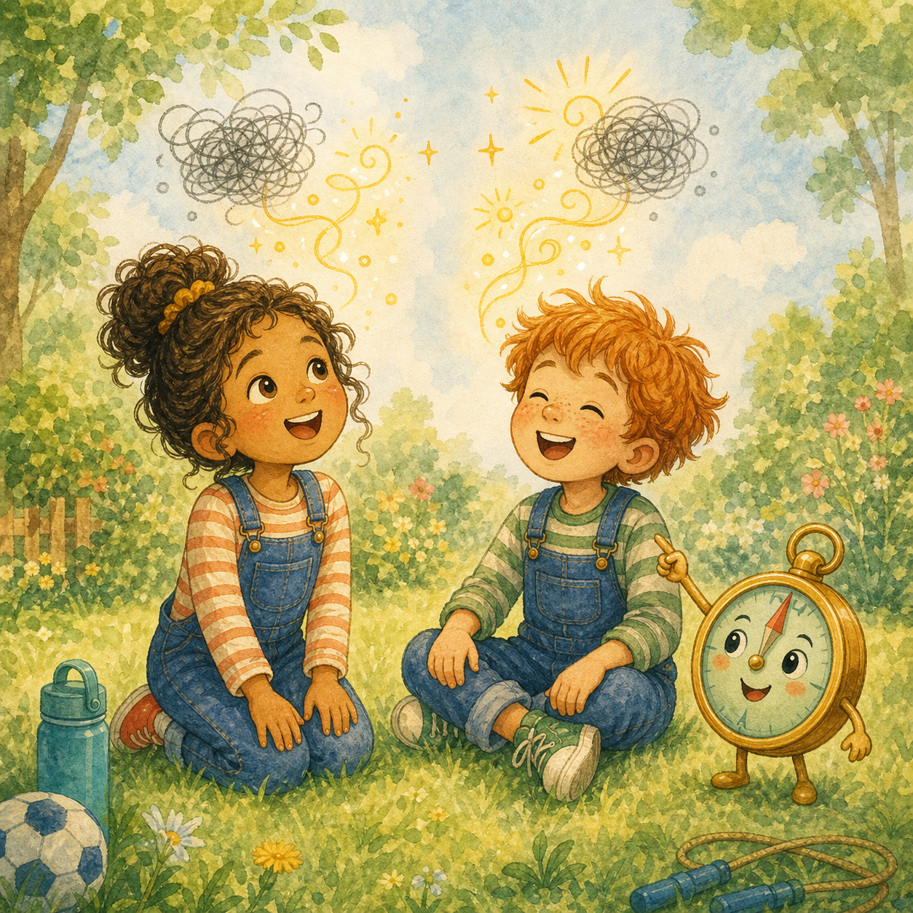
Seite 30
Nach dem Rennen setzten sie sich ins Gras.
Noah atmete schneller.
Dann lachte er.
„Komisch. Ich bin müde und wach gleichzeitig.“
„Das ist ein gutes Toben-Gefühl“, sagte Calli.
Mira nickte. „Mein Kopf ist weniger verknotet.“
„Bewegung hilft nicht nur den Muskeln“, erklärte Calli. „Sie kann auch dem Kopf helfen, sich wacher und sortierter zu fühlen.“
Noah schaute an sich herunter.
„Also sind meine Beine heimliche Kopfarbeiter?“
„Manchmal“, sagte Calli. „Sehr sportliche sogar.“
Seite 31
Am Nachmittag malte Mira.
Noah baute.
Dann saßen beide lange.
Sehr lange.
Calli wurde erst leise.
Dann rollte er einmal gegen Noahs Schuh.
Tock.
„Hey!“
„Bewegungserinnerung“, sagte Calli.
„Ich war gerade in Gedanken“, sagte Noah.
„Gedanken sind toll“, sagte Calli. „Aber Körper mögen Wechsel. Sitzen, bewegen, sitzen, bewegen. Wie ein freundlicher Rhythmus.“
Mira streckte die Arme.
„Dann machen wir eine Mini-Pause.“
„Genau“, sagte Calli. „Nicht riesig. Nur wirksam.“
Seite 32
Bewegung kann deinem Körper helfen:
Muskeln stärker zu machen.
Knochen zu belasten, damit sie kräftig bleiben.
Herz und Atmung zu trainieren.
Den Kopf wacher zu machen.
Die Stimmung zu bewegen, wenn innen alles festklebt.
Callis Satz für dieses Kapitel:
Bewegung ist keine Strafe. Bewegung ist Körperfreude mit Schweißperlen.
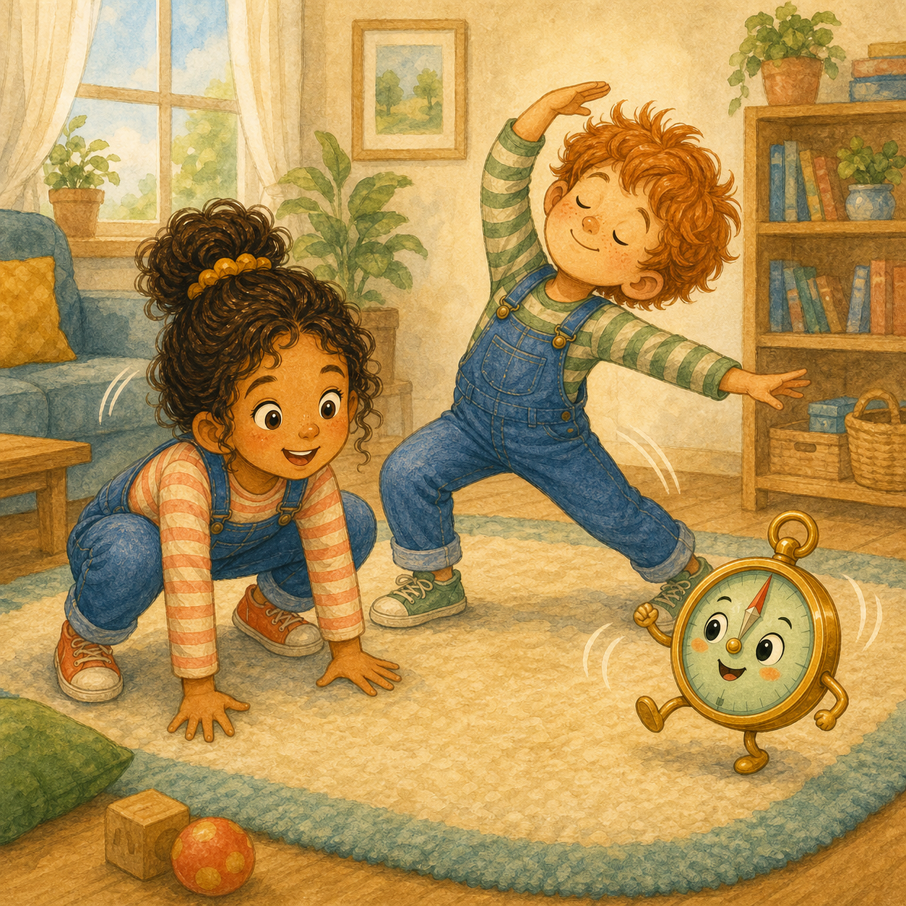
Seite 33
Probiere drei Bewegungen:
Froschsprung: fünfmal klein in die Hocke und hüpfen.
Bärengang: auf Händen und Füßen durch den Raum.
Flamingo: auf einem Bein stehen und bis zehn zählen.
Mira schaffte Flamingo bis acht.
Noah schaffte Flamingo bis drei und erfand dann den Wackel-Flamingo.
Calli versuchte den Bärengang.
Er kam genau zwei Zentimeter weit.
„Ich bin eher ein Rolltier“, sagte er.
Seite 34
Nach der Tier-Olympiade lag Noah im Gras.
„Meine Beine sind leer.“
„Dann haben sie gearbeitet“, sagte Calli.
Mira trank Wasser.
„Meine auch. Aber gut leer.“
„Pausen sind Teil von Bewegung“, sagte Calli. „Wer tobt, darf trinken. Wer rennt, darf ausruhen. Wer übt, darf langsam besser werden.“
Noah sah seine Turnschuhe an.
„Meine Schuhe wollen morgen wieder.“
„Dann schreiben wir das in den Wochen-Kompass“, sagte Calli.
„Meine Schuhe können schreiben?“
„Nein“, sagte Calli. „Aber sie können sehr deutlich herumstehen.“
Seite 35
Bewegung muss nicht immer Sport heißen.
Für viele Kinder sind Alltagsspiele leichter:
Treppe statt Aufzug.
Tanzlied in der Küche.
Fünf Minuten Fangen.
Rucksack selbst tragen.
Spaziergang mit Suchauftrag.
Wichtig ist nicht, dass es perfekt ist. Wichtig ist, dass Bewegung normal, freundlich und erreichbar bleibt.
Seite 36
Am nächsten Tag regnete es.
Mira mochte Regen.
Aber heute fühlte sich in ihr noch etwas anderes regnerisch an.
Noah baute einen Papierflieger. Er warf ihn.
Der Flieger landete genau in Miras Bild.
Mira wurde still.
Sehr still.
Noah merkte es zuerst nicht.
„Guter Flug“, sagte er.
Mira zog die Augenbrauen zusammen.
„Nicht guter Landeplatz.“
Da wurde es in ihrem Bauch eng.
Calli rollte langsam näher.
„Gefühls-Wetter“, sagte er leise.
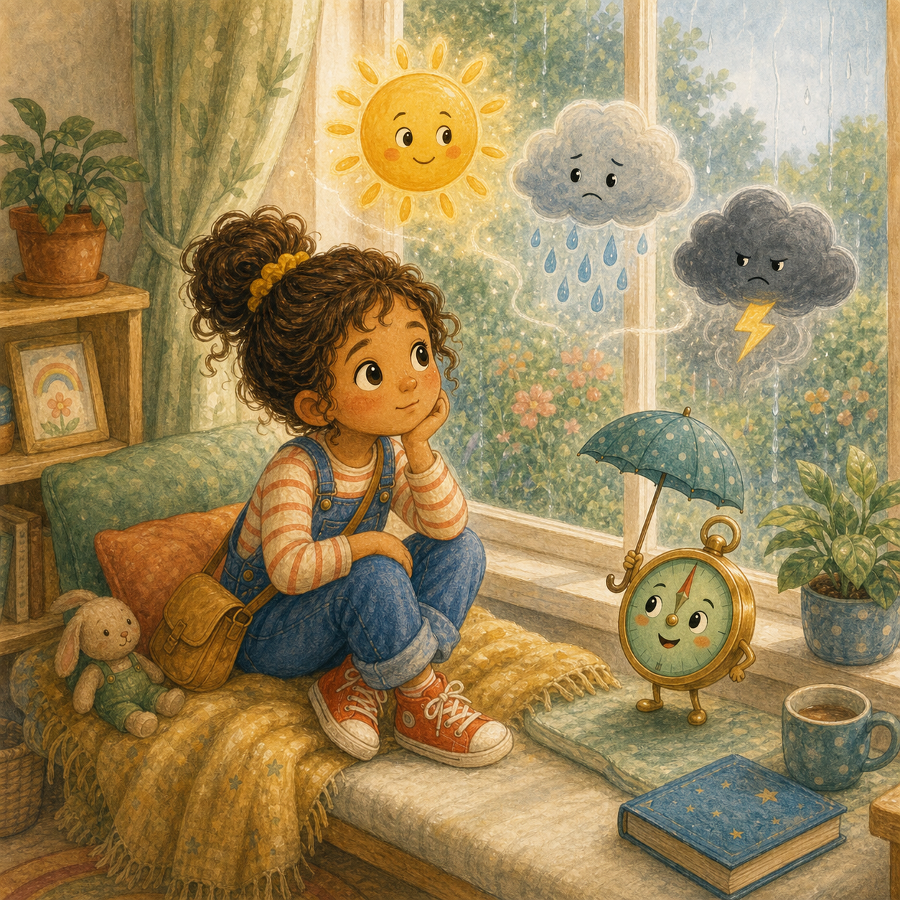
Seite 37
„Ich bin wütend“, sagte Mira.
Dann schüttelte sie den Kopf.
„Oder traurig.“
Dann schüttelte sie noch einmal den Kopf.
„Oder beides. Kann man beides sein?“
„Oh ja“, sagte Calli. „Innenwetter kann sehr gemischt sein.“
Über Miras Kopf erschienen kleine Wolken. Eine blitzte. Eine regnete. Eine sah aus, als wollte sie einfach nur eine Decke.
Noah sah den Papierflieger an.
„Das war nicht extra.“
„Das hilft“, sagte Calli. „Aber Miras Körper ist trotzdem gerade laut.“
Mira atmete einmal kurz.
„Mein Bauch ist fest.“
„Das ist eine wichtige Nachricht“, sagte Calli. „Gefühle wohnen nicht nur im Kopf. Man merkt sie oft auch im Körper.“
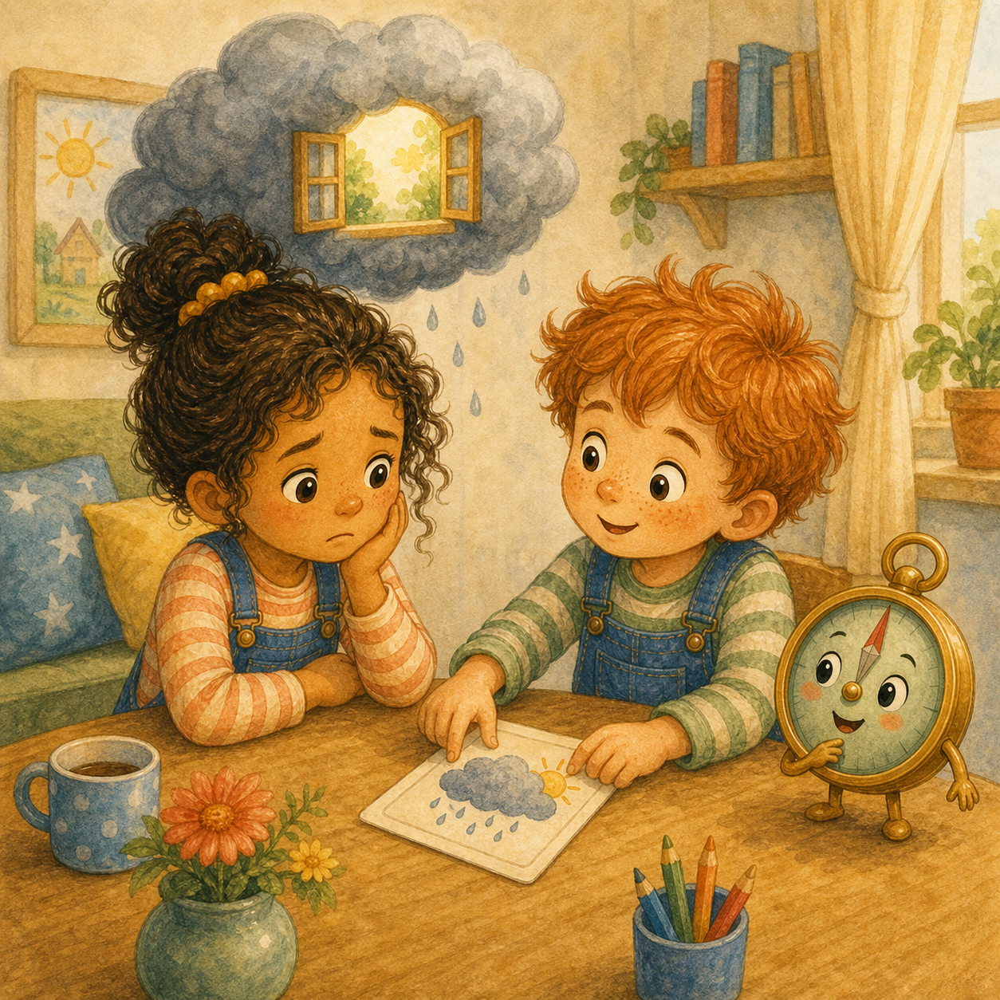
Seite 38
Noah nahm den Papierflieger aus dem Bild.
„Entschuldigung“, sagte er. „Ich wollte dein Bild nicht treffen.“
Mira nickte.
Das Gewitter wurde ein bisschen leiser.
„Ich will trotzdem noch wütend sein“, sagte sie.
„Das darfst du“, sagte Calli. „Entschuldigung ist kein Zauberradierer.“
Noah setzte sich neben sie.
„Soll ich helfen?“
Mira überlegte.
„Du kannst das Papier glattstreichen.“
Noah strich vorsichtig über die Ecke.
Calli lächelte.
„Reden macht Wetter nicht sofort weg. Aber es macht Fenster auf.“
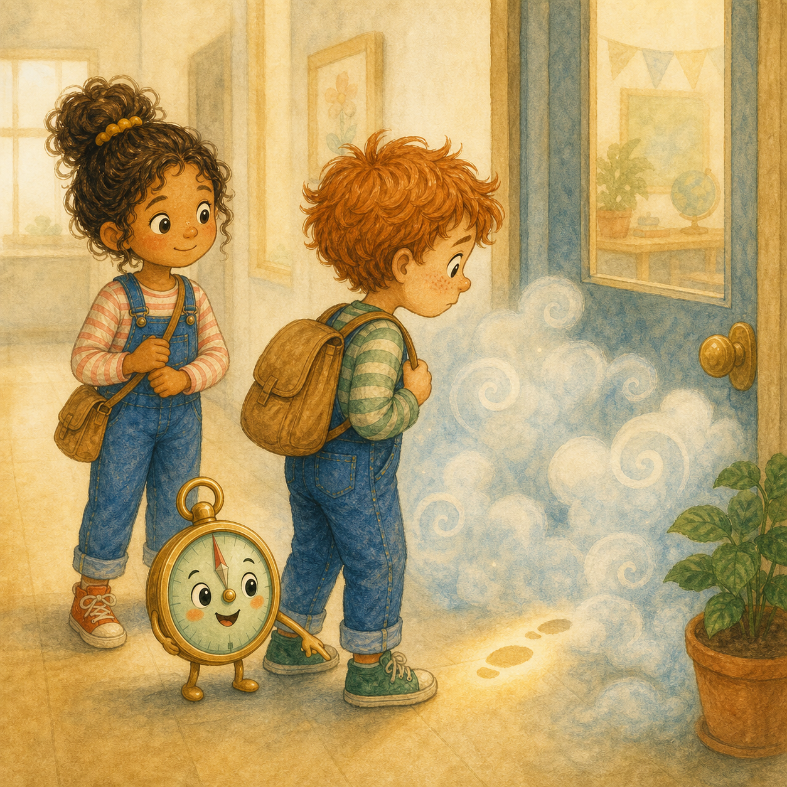
Seite 39
Später erzählte Noah, dass er auch Innenwetter kannte.
„Manchmal habe ich vor neuen Sachen Angst“, sagte er. „Dann wird mein Bauch ein Nebelglas.“
„Nebelglas?“, fragte Mira.
„So, als könnte ich nicht richtig durchgucken.“
Calli nickte.
„Angst will oft schützen. Sie ruft: Achtung, schau genau hin.“
„Aber manchmal ruft sie zu laut“, sagte Noah.
„Dann suchen wir einen sicheren Erwachsenen“, sagte Calli. „Oder wir machen den nächsten Schritt kleiner.“
Mira hob einen Finger.
„Wie klein?“
Calli zeigte mit zwei winzigen Kompassarmen eine winzige Lücke.
„Manchmal so klein.“
Seite 40
Gefühle sind Körperzeichen.
Wut kann sich heiß anfühlen.
Angst kann den Bauch eng machen.
Traurigkeit kann schwer sein.
Freude kann kribbeln.
Kein Gefühl ist falsch.
Aber nicht jedes Gefühl darf alles bestimmen.
Du darfst lernen, was du fühlst, was du brauchst und wen du um Hilfe bitten kannst.
Callis Satz für dieses Kapitel:
Innenwetter darf da sein. Du musst nicht allein darin stehen.
Seite 41
Sag deinen Wetterbericht:
Heute war in mir:
Sonne.
Wolken.
Nebel.
Gewitter.
Wind.
Regen.
Alles durcheinander.
Dann frag:
Was hat geholfen?
Reden?
Atmen?
Pause?
Umarmung?
Allein sein?
Hilfe holen?
Mira sagte: „In mir war erst Gewitter. Dann kleiner Regen. Jetzt ist es nur noch Pfütze.“
Noah sagte: „Pfütze klingt machbar.“
Seite 42
Calli legte sich flach auf den Tisch.
„Was machst du?“, fragte Noah.
„Ich bin ein Atem-Anker.“
Mira lachte. „Du bist ein Kompass.“
„Ein sehr vielseitiger Kompass.“
Calli zeigte es vor:
Einatmen: Die Schultern werden weich.
Ausatmen: Der Bauch darf loslassen.
Noch einmal.
Nicht, damit ein Gefühl sofort verschwindet.
Sondern damit man wieder besser entscheiden kann.
Noah probierte es.
„Mein Nebelglas ist noch da“, sagte er. „Aber es ist weniger beschlagen.“
„Das reicht“, sagte Calli.
Seite 43
Kinder brauchen Worte für Gefühle, bevor sie gute Wege damit finden.
Hilfreiche Sätze:
„Ich sehe, da ist gerade viel los.“
„Wo merkst du es im Körper?“
„Willst du reden, atmen, Pause oder Hilfe?“
Gefühle benennen heißt nicht, Verhalten automatisch zu erlauben.
Es heißt: Erst verstehen. Dann begleiten. Dann entscheiden.
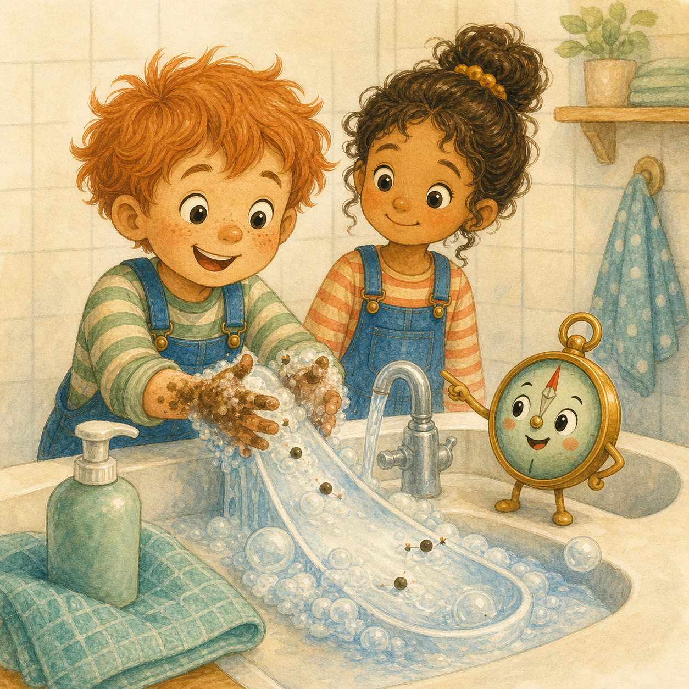
Seite 44
Am Nachmittag kam Noah aus dem Garten.
Seine Hände sahen aus, als hätten sie ein sehr erfolgreiches Treffen mit Erde gehabt.
„Ich habe einen Tunnel gebaut“, sagte er stolz.
Mira zeigte auf seine Finger.
„Da wohnt noch ein halber Garten.“
Noah betrachtete seine Hände.
„Der Garten hängt an mir.“
Calli rollte zum Waschbecken.
„Dann ist es Zeit für die Seifen-Rutschbahn.“
„Gibt es eine Rutschbahn?“, fragte Noah.
„Für Schmutz“, sagte Calli.
„Das klingt fair“, sagte Noah.
Seite 45
Calli machte kein Gruselgesicht.
Er malte auch keine riesigen Monster.
„Auf Händen können Dinge sein, die man nicht sieht“, erklärte er. „Schmutz, Staub und manchmal Keime.“
Mira schaute auf ihre Hände.
„Unsichtbare Mitfahrer?“
„Genau“, sagte Calli. „Viele sind harmlos. Manche können krank machen. Deshalb waschen wir sie nach dem Draußenspielen, nach der Toilette, vor dem Essen und wenn wir gehustet oder geniest haben.“
Noah drehte den Wasserhahn auf.
„Alle aussteigen“, sagte er zu seinen Händen.
„Mit Seife“, sagte Calli.
„Alle aussteigen, aber rutschig“, verbesserte Noah.
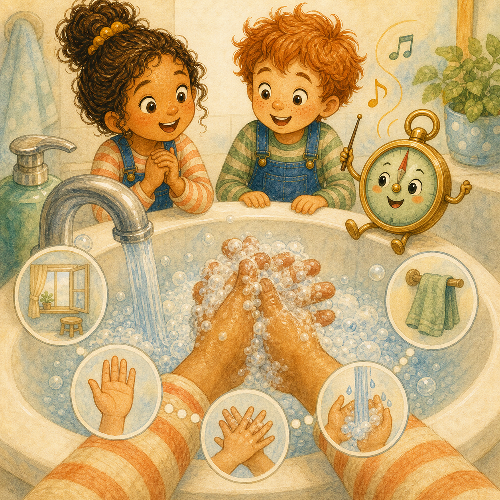
Seite 46
Noah rieb die Hände aneinander.
„Fertig.“
„Noch nicht“, sagte Mira.
„Woher weißt du das?“
„Weil deine Daumen aussehen, als hätten sie Urlaub gemacht.“
Calli nickte.
„Handflächen, Handrücken, zwischen den Fingern, Daumen, Fingerspitzen.“
Noah seufzte.
„Meine Hände haben viele Zimmer.“
„Und Seife besucht jedes“, sagte Calli.
Mira zählte langsam bis zwanzig.
Noah machte bei siebzehn ein sehr dramatisches Gesicht.
Bei zwanzig schäumten seine Hände wie kleine Wolken.
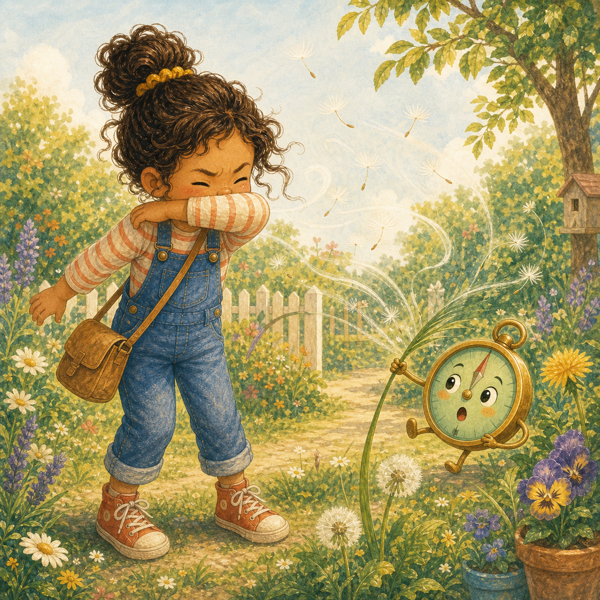
Seite 47
Später musste Mira niesen.
„Ha...“
Calli hob beide Arme.
„Armbeuge!“
„...tschiiii!“
Mira nieste in die Armbeuge.
Noah applaudierte leise.
„Sportliche Kurve.“
„Beim Husten und Niesen fliegen winzige Tröpfchen“, sagte Calli. „Die Armbeuge ist wie eine kleine Fangstation.“
Mira sah in ihre Armbeuge.
„Ich habe eine Fangstation am Körper?“
„Sehr praktisch eingebaut“, sagte Calli.
„Kann meine Armbeuge auch Briefe sortieren?“, fragte Noah.
„Nicht alles ist Post“, sagte Calli.
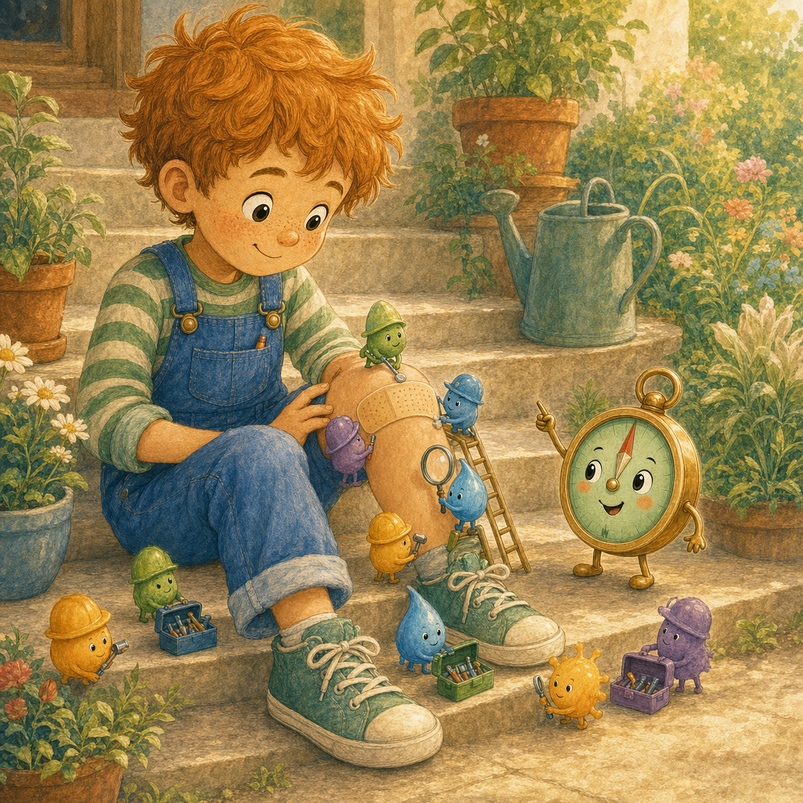
Seite 48
Am Abend fühlte sich Noah schlapp.
Nicht schlimm.
Aber schlapp.
Er wollte nicht rennen.
Er wollte nicht bauen.
Er wollte nicht einmal erklären, warum sein Turm einen Hubschrauberlandeplatz brauchte.
„Mein Körper ist heute langsam“, sagte er.
Calli rollte näher.
„Dann hört er vielleicht auf ein anderes Signal.“
„Welches?“
„Schonung.“
Mira brachte ihm Wasser.
„Krank sein ist kein Versagen“, sagte Calli. „Manchmal braucht der Körper Ruhe, Flüssigkeit und einen Erwachsenen, der gut hinschaut.“
Noah kuschelte sich in eine Decke.
„Dann bin ich heute ein Ruhe-Profi.“
Seite 49
Hände waschen hilft im Alltag.
Besonders:
vor dem Essen,
nach der Toilette,
nach dem Draußenspielen,
nach Husten oder Niesen,
wenn Hände sichtbar schmutzig sind.
Husten und Niesen in die Armbeuge kann andere schützen.
Wenn du dich krank fühlst, sag einem Erwachsenen Bescheid.
Callis Satz für dieses Kapitel:
Sauberkeit soll schützen, nicht erschrecken.
Seite 50
So waschen Hände besonders gut:
Nass machen.
Seife nehmen.
Handflächen reiben.
Handrücken reiben.
Zwischen den Fingern waschen.
Daumen nicht vergessen.
Fingerspitzen waschen.
Abspülen.
Abtrocknen.
Noah hielt die Hände hoch.
„Sie sehen aus wie neu.“
„Nicht ganz neu“, sagte Mira. „Aber weniger Garten.“
Seite 51
Hygiene soll Kindern Sicherheit geben, keine Angst.
Statt Keime als gruselige Feinde zu zeigen, hilft ein ruhiger Rahmen:
„Wir waschen Hände, weil es schützt.“
„Wir niesen in die Armbeuge, weil das freundlich für andere ist.“
„Wenn du dich krank fühlst, sagst du Bescheid.“
So bleiben Kinder handlungsfähig.
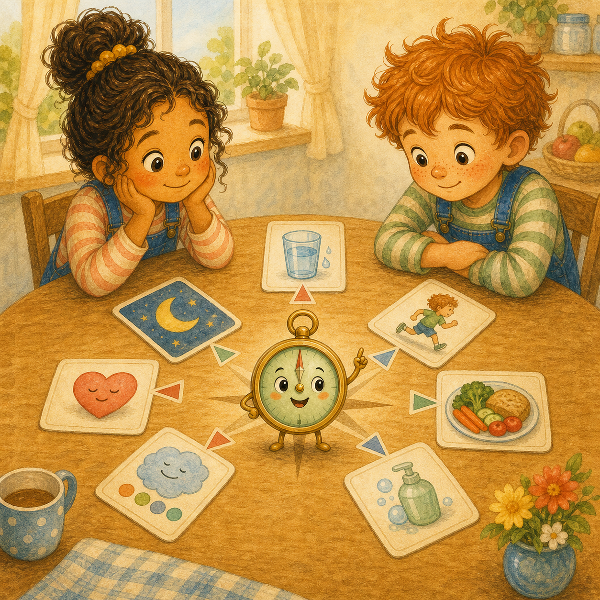
Seite 52
Am Sonntag legte Calli sieben kleine Karten auf den Tisch.
„Was ist das?“, fragte Mira.
„Der Wochen-Kompass.“
Noah stöhnte. „Klingt nach Hausaufgaben.“
„Nein“, sagte Calli. „Nach Ausprobieren.“
Auf den Karten standen keine langen Regeln.
Nur kleine Dinge:
Wasser hinstellen.
Abendritual wählen.
Fünf Minuten bewegen.
Wetterbericht sagen.
Hände waschen.
Pausen machen.
Freundlich entscheiden.
Mira nahm die Wasserkarte.
Noah nahm die Bewegungskarte.
„Ich nehme die Karte, auf der ich springen darf.“
„Überraschend“, sagte Calli.
Seite 53
Mira wollte sofort drei Karten nehmen.
Wasser.
Abendritual.
Wetterbericht.
Dann sah sie die vielen Karten an und wurde still.
„Das ist doch viel.“
Calli schob zwei Karten zurück.
„Eine Sache reicht für den Anfang.“
„Aber was ist mit den anderen?“
„Die laufen nicht weg“, sagte Calli. „Gewohnheiten mögen kleine Türen.“
Noah sprang einmal.
„Meine Tür hüpft.“
„Dann hat sie heute gute Laune“, sagte Calli.
Seite 54
Am Montag stellte Mira morgens ein Glas Wasser auf den Tisch.
Sie vergaß es.
Dann erinnerte sie sich.
Dann trank sie.
„Zählt das?“, fragte sie.
„Natürlich“, sagte Calli.
„Aber ich habe es vergessen.“
„Und wiedergefunden.“
Mira lächelte.
Noah machte fünf Froschsprünge.
Beim sechsten fiel er auf den Teppich und lachte.
„Zählt das?“
„Wenn der Teppich einverstanden ist“, sagte Calli.
Der Teppich sagte nichts.
Teppiche sind fast so unhöflich wie Brote.
Seite 55
Am Mittwoch hatte niemand Lust.
Mira nicht.
Noah nicht.
Calli auch nicht besonders, aber er war professionell.
„Heute ist der Wochen-Kompass schwer“, sagte Mira.
„Dann machen wir ihn kleiner“, sagte Calli.
„Wie klein?“
„Ein Schluck Wasser.“
Mira trank.
„Einmal strecken.“
Noah streckte die Arme.
„Ein Gefühl nennen.“
„Grummelig“, sagten beide.
Calli nickte.
„Ausgezeichnet. Grummelig erkannt.“
Seite 56
Am Freitag erinnerte Noah Mira.
„Wasserkarte.“
Mira erinnerte Noah.
„Froschsprungkarte.“
Noah sah sie streng an.
„Ich bin heute eher ein müder Frosch.“
„Dann mach einen müden Frosch“, sagte Mira.
Noah ging in die Hocke, hüpfte sehr klein und setzte sich sofort wieder.
„Das war ein Frosch mit Bürojob“, sagte Calli.
Mira lachte so sehr, dass ihr Wasser beinahe aus dem Glas kicherte.
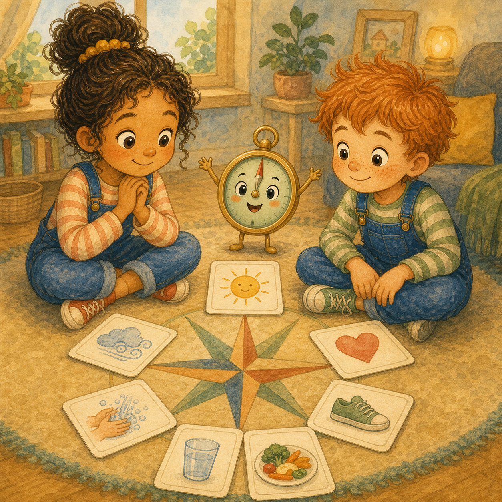
Seite 57
Am Sonntag legte Calli die sieben Karten wieder auf den Tisch.
„Was habt ihr gelernt?“
Mira überlegte.
„Ich muss nicht alles auf einmal ändern.“
Noah sagte: „Mein Körper mag kleine Sachen, wenn ich sie wirklich mache.“
„Sehr gut“, sagte Calli.
„Und ich habe gelernt“, sagte Mira, „dass mein Bauch, mein Kopf und meine Beine manchmal verschiedene Meinungen haben.“
„Das ist normal“, sagte Calli. „Dann hörst du zu und entscheidest freundlich.“
Noah grinste.
„Also bin ich jetzt ein Körper-Zuhörer.“
„Offiziell“, sagte Calli.
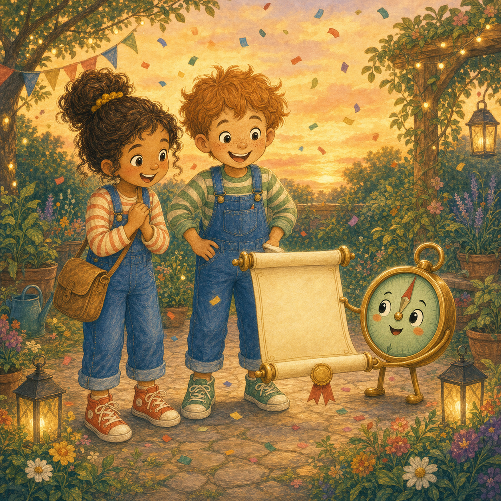
Seite 58
Calli klappte eine kleine Urkunde auf.
„Bevor ihr sie bekommt, kommt der Kompass-Check“, sagte Calli. „Sieben kleine Fragen. Eine für jedes Kapitel.“
Noah setzte sich gerade hin.
„Ich bin bereit. Vielleicht.“
Frage eins: Was sagt ein lautes KNURR oft?
Mira sagte: „Mein Körper braucht Energie.“
Frage zwei: Was hilft, wenn der Mund trocken wird?
Noah sagte: „Wasser. Keine Limonaden-Feuerwehr.“
Frage drei: Was kann abends beim Schlafen helfen?
Mira sagte: „Eine Startrampe: Zähne putzen, Licht leiser, Geschichte hören.“
Frage vier: Was können Zappelbeine brauchen?
Noah sagte: „Bewegung. Oder eine Pause zum Sortieren.“
Frage fünf: Was darf man sagen, wenn innen Gewitter ist?
Mira sagte: „Ich bin wütend. Oder traurig. Oder beides.“
Frage sechs: Was hilft den Händen nach Garten, Niesen und Klebekram?
Noah sagte: „Waschen. Mit Lied, auch wenn es kein richtiges Lied ist.“
Frage sieben: Was machst du, wenn du nicht weißt, was dein Körper meint?
Mira und Noah sagten zusammen: „Erst hören. Dann Hilfe holen oder freundlich entscheiden.“
Calli strahlte.
„Bestanden“, sagte Calli. „Mit sehr wachen Ohren.“
CALLIDUS KIDS · CALLIS GESUNDHEITS-KOMPASS
für einen echten Signal-Helden / eine echte Signal-Heldin
hat gelernt, die Zeichen seines Körpers zu hören:
vom morgendlichen KNURR bis zum großen Gähnen –
und weiß jetzt: Der Körper redet. Helden hören zu.
Seite 60
Kinder lernen Gesundheitsverhalten nicht durch Angst.
Sie lernen durch Wiederholung, Vorbild, Sprache und kleine erreichbare Schritte.
Dieses Buch lädt ein, Körperzeichen wahrzunehmen:
Hunger ohne Scham.
Durst ohne Drama.
Müdigkeit ohne Kampf.
Bewegung ohne Strafgefühl.
Gefühle ohne Alleinsein.
Hygiene ohne Grusel.
Wenn ein Thema in der Familie belastet ist, darf es langsamer gehen.
Seite 61
Gute Fragen sind oft besser als schnelle Anweisungen.
Was merkst du gerade?
Wo merkst du es?
Was könnte helfen?
Brauchst du Wasser, Essen, Bewegung, Ruhe, Nähe oder Hilfe?
Wollen wir eine kleine Sache ausprobieren?
Diese Fragen machen Kinder nicht automatisch gesund.
Aber sie helfen, Aufmerksamkeit zu üben.
Und Aufmerksamkeit ist eine starke Grundlage.
Seite 62
Manche Signale brauchen Erwachsene sofort.
Starke Schmerzen.
Atemnot.
Ohnmacht.
Anhaltendes Fieber.
Starke Angst.
Wiederkehrende Schlafprobleme.
Essverhalten, das Sorgen macht.
Verletzungen, die nicht gut aussehen.
Dieses Buch ersetzt keine ärztliche Beratung und keine Diagnostik.
Es soll Kindern Sprache geben. Für alles Weitere sind sichere Erwachsene und Fachpersonen da.
Seite 63
Eine gute Familienfrage für den Wochenstart:
Welche eine kleine Gewohnheit wollen wir diese Woche üben?
Nur eine.
Zum Beispiel:
Ein Glas Wasser morgens sichtbar hinstellen.
Abends zehn Minuten früher ruhiger werden.
Nach langem Sitzen fünf Bewegungen machen.
Beim Essen einmal den Bauch fragen.
Jeden Abend einen Wetterbericht nennen.
Wenn es nicht klappt: nicht schimpfen.
Neu anfangen.
Seite 64
Woher wissen Erwachsene solche Dinge?
Nicht aus Zauberei.
Forscherinnen und Forscher beobachten, messen, vergleichen und prüfen.
Sie schauen zum Beispiel:
Wie Schlaf mit Aufmerksamkeit zusammenhängt.
Warum Bewegung Kindern guttut.
Wie Händewaschen Krankheiten verringern kann.
Warum Wasser, Abwechslung und Ballaststoffe im Alltag wichtig sind.
Dieses Buch macht daraus Bilder, die Kinder verstehen können.
Seite 65
Für die finale Veröffentlichung werden die Fakten fachlich gegengeprüft.
Als Startpunkte dienen unter anderem:
CDC Sleep
ODPHP Move Your Way für Kinder und Jugendliche
CDC Clean Hands
DGE Empfehlungen zu Ernährung und Trinken
Die Quellen werden in der finalen Ausgabe in ruhiger, kompakter Form angegeben.
Seite 66
callidus möchte Gesundheitswissen verständlich machen.
Nicht laut.
Nicht ängstlich.
Nicht so kompliziert, dass niemand mehr zuhört.
Sondern klar, freundlich und alltagstauglich.
Für Erwachsene gibt es bei callidus Gesundheitswissen, Checks und digitale Angebote.
Callis Gesundheits-Kompass übersetzt diese Haltung für Familien und Kinder.
Mit weniger Druck.
Mit mehr Sprache.
Und mit einem Kompass, der manchmal sehr stolz auf ein Wasserglas ist.
Seite 67
Band 1 hilft beim Hören auf Körperzeichen.
Weitere Bände können tiefer gehen:
Band 2: Das Zucker-Monster: Essen, Trinken und Energie.
Band 3: Der Zappelmotor: Bewegung, Pausen und Gute-Laune-Funken.
Band 4: Die Schlaf-Werkstatt: Abendrituale, Licht und innere Uhr.
Band 5: Das Gefühls-Wetter: Gefühle, Mut und Hilfe holen.
Band 6: Die Abwehr-Polizei: Hygiene, Schutz und keine Angst vorm Doktor.
Aber zuerst gilt:
Erst hören.
Dann entscheiden.
Seite 68
Titel: Callis Gesundheits-Kompass – Band 1: Hör auf deinen Körper
Text und Konzept: callidus
Illustrationskonzept: Digitale Aquarellbilder auf Basis fester Character-Sheets für Calli, Mira und Noah.
Alle Rechte vorbehalten.
Dieses Buch darf nicht ohne Erlaubnis vervielfältigt, verkauft oder öffentlich verbreitet werden.
Die finalen Angaben zu Verlag, ISBN, Impressum, Erscheinungsjahr und Bezugswegen werden vor Veröffentlichung ergänzt.
Seite 69
Ein Teil der Bildproduktion entsteht mit KI-gestützten Bildwerkzeugen und wird vor Veröffentlichung geprüft, überarbeitet und bei Amazon KDP entsprechend deklariert.
Die Texte vermitteln allgemeines Gesundheitswissen für Familien.
Sie ersetzen keine ärztliche Beratung, keine Diagnose und keine Behandlung.
Bei gesundheitlichen Sorgen, starken Beschwerden oder Unsicherheit sollten Kinder und Erwachsene medizinischen Rat einholen.
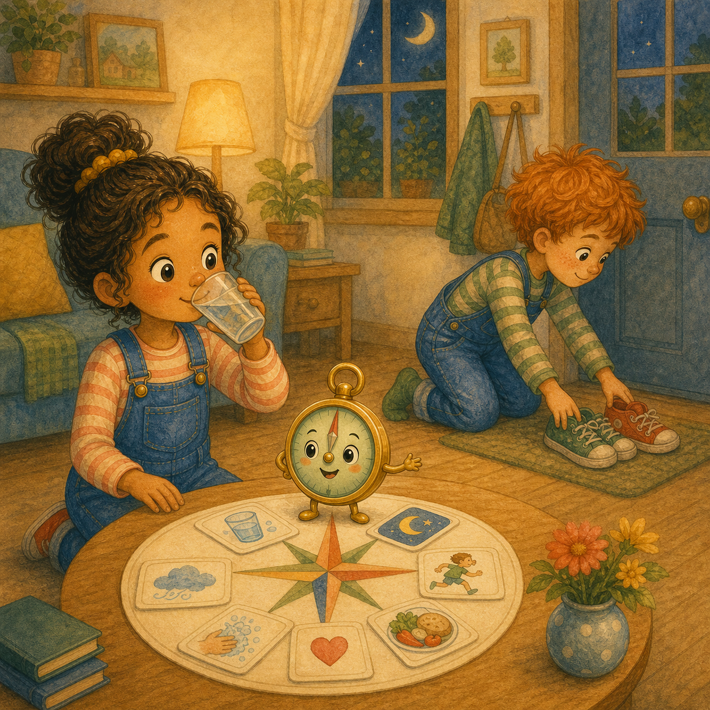
Seite 70
Am Abend lag der Wochen-Kompass auf dem Tisch.
Mira trank einen letzten Schluck Wasser.
Noah stellte seine Schuhe ordentlich neben die Tür.
„Für morgen“, sagte er. „Falls sie wieder herumstehen wollen.“
Calli lächelte.
„Eure Körper werden morgen wieder sprechen.“
„Knurren?“, fragte Noah.
„Vielleicht.“
„Gähnen?“, fragte Mira.
„Bestimmt.“
„Zappeln?“
„Sehr wahrscheinlich.“
Mira zog die Decke hoch.
„Dann hören wir wieder hin.“
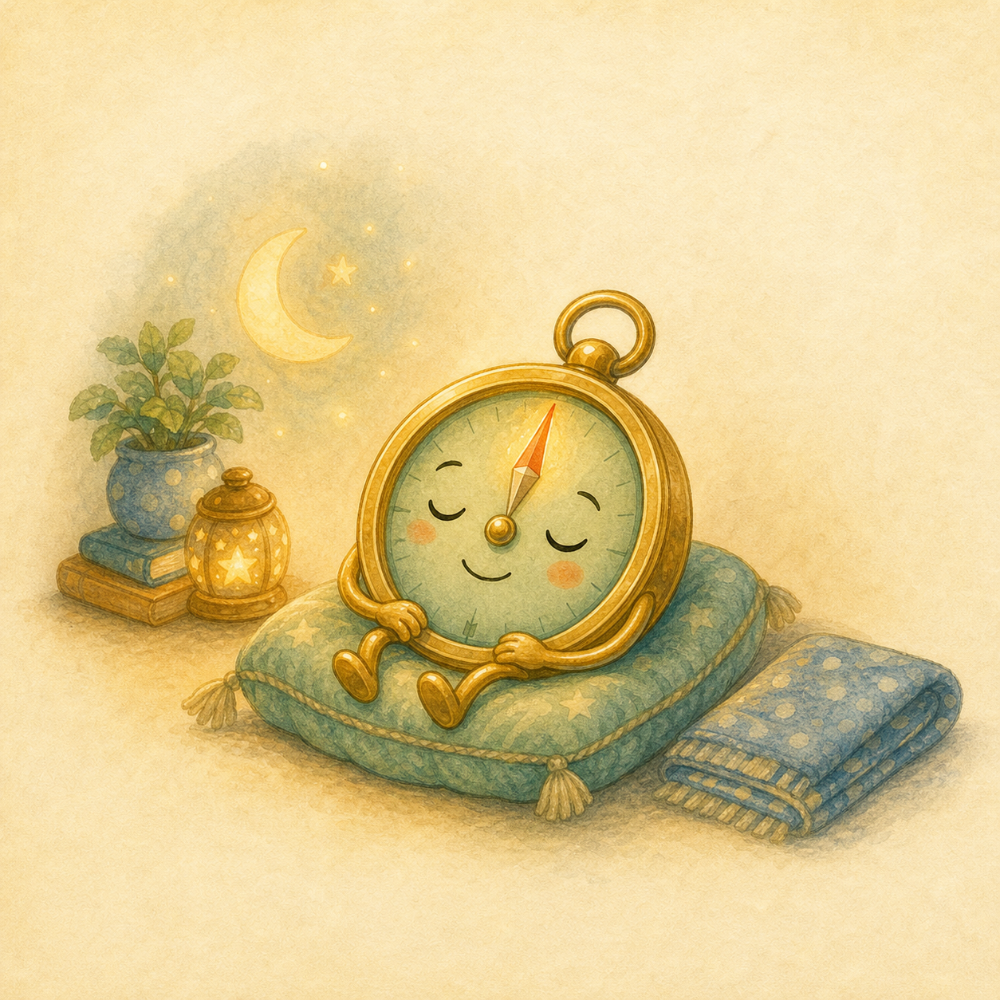
Seite 71
Calli klappte seine Nadel ein.
Nicht ganz.
Nur ein bisschen.
Denn ein guter Kompass schläft nie völlig ein.
Er ruht nur.
Für morgen.
Und falls dein Körper heute noch etwas sagt, dann weißt du jetzt:
Du musst nicht erschrecken.
Du kannst hinhören.
Du kannst fragen.
Du kannst freundlich entscheiden.
Und irgendwo, ganz leise, sagt Calli:
„Erst hören. Dann entscheiden.“